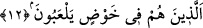
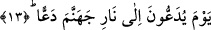
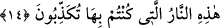
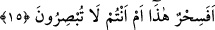

12. Ki onlar daldıkları bâtıl içinde oyalanıp duranlardır.
“Ki onlar daldıkları” acayip bir şekilde sevk olundukları “bâtıl” boş, yalan ve
yanlış şeylerin “içinde oyalanıp duranlardır.”
“Bâtıl söz”den maksad, Hz Peygamberi inkâr eden, yalanlayan ve Kur’ân’ı alaya alan
bâtıl sözlerdir.
Fethu’r-Rahmân’da müellif, havd kelimesine, “bâtıl olan şeylere dalma” mânâsını
vermiş bunu “suya dalma”ya teşbih etmiştir. Havâşi’l-Keşşaf ’da da “havd” kelimesinin
“her türlü fiile dalma” anlamının yanı sıra ekseriyetle “bâtıla dalma” anlamında
kullanıldığı belirtilmiştir. “...Şimdi ben de oraya (cehenneme) getirilenlerden
olurdum” (es-Saffât 37/57) âyetinde de görüldüğü üzere “kişinin azaba getirilmesi”
mânâsını taşır olmuştur.
Onlar “bâtıl içinde oyalanıp dururlar,” yâni küfürleri ile meşgul olup avunurlar.
13. O gün cehennem ateşine itilip atılırlar.
Da’, şiddetle itmek demektir. Bu kelimenin asıl mânâsı, kaygan zeminde olana veya
tuzağa yaklaşan kişiye “haydi haydi” demektir. Yâni o yalanlayanlar elleri boyunlarında
kelepçelenmiş ve alınları ayaklarında birleştirilmiş bir vaziyette çok şiddetli ve çetin
bir itişle cehenneme doğru götürülürken ters dönememeleri için yüzü koyun veya
sırtüstü oraya atılırlar.
14. “İşte yalanlayıp durduğunuz ateş budur!” denilir.
Cehennem bekçileri tarafından kendilerine “işte” dünyada “yalanlayıp durduğunuz
ateş budur!” denilir. Yâni yalanladığınız vahyin/Kur’ân’ın bahsedip haber verdiği ateş
budur.
15. Bir büyü müdür bu, yoksa görmüyor musunuz?
Kâfirler Kur’ân’ı “sihir” diye isimlendirdikleri için bu onlara bir azar ve serzeniştir.